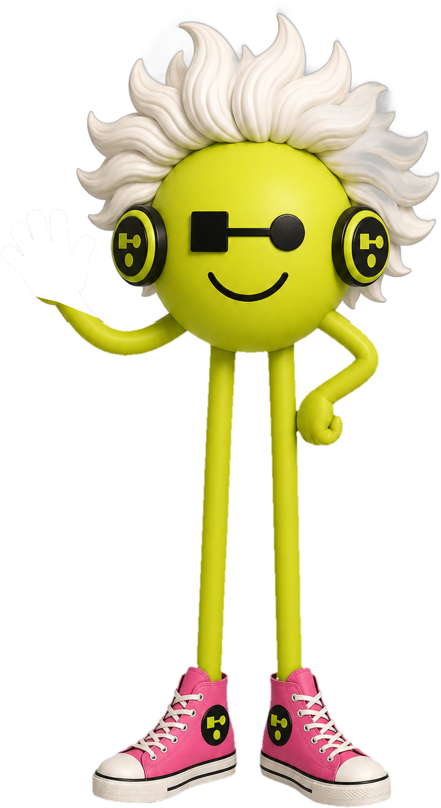
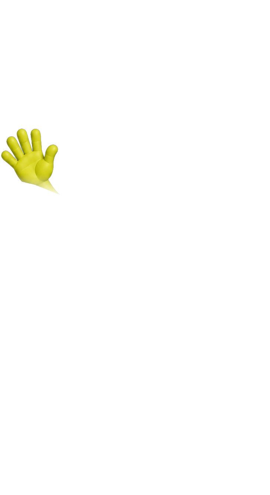

CLASSIQ MEETS THE FIRST QUANTUM ENGINEER AGENT


ALBERT.
YOUR QUANTUM ENGINEER · ON DEMAND
The first agent on the Classiq platform. Albert designs, builds and debugs
quantum algorithms with you — from idea to running circuit.
Smart, approachable, and always ready to help.